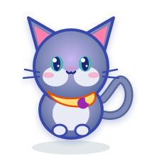

☀️
☁️
🌤️
🏡
🌙
⭐
✨
🌟
🏠
⏰ 夢幻生理時鐘王國 ⏰
《生理時鐘大冒險》
一起探索晨型人與夜型人的生活節奏！

「太陽升起，有人精神百倍！
月亮出現，有人卻才剛充滿活力！
每個人的生理時鐘都不太一樣。
你能幫助三位好朋友，找到適合自己的生活節奏嗎？」
💡 只要完成時間規劃即可通關，不設分數限制，盡情探索不同作息安排！
「Inu 是一隻喜歡早起的小狗！可是今天他的生活時間表被打亂了！你能幫他重新安排一天的生活嗎？」
👉 拖曳卡片或點擊卡片後點擊時間格！
待安排活動卡片
6 / 6 張點擊卡片選取，或直接拖曳到時間格中：
每日生活計畫板
已安排 0 / 6

「明天早上 8 點就要上學了！可是 Neko 平常比較晚睡，早上常常起不來。Usagi 決定陪他一起調整作息！你能幫助 Neko 找到比較健康的睡眠習慣嗎？」
✨ 點擊臥室物品調整環境，並選擇合適的就寢時間！
點擊臥室中的物品，改善睡前環境營造放鬆氛圍：
📱 智慧型手機
使用中
睡前使用手機，螢幕藍光與訊息容易刺激大腦保持清醒。
💡 臥室檯燈
燈光明亮
太亮的光線會抑制褪黑激素分泌，影響睡意產生。
📖 睡前讀物
未翻開
睡前安靜閱讀或聆聽輕柔音樂，有助於情緒放鬆。
Neko 今年 12 歲，明天早上 8 點上學，固定 07:00 起床準備。請為他選擇就寢時間：
🛏️ 安排就寢：21:00
⏰ 固定起床：07:00
💤 預計睡眠：10.0 小時
📌 6～12 歲兒童健康睡眠建議：每日約 9～12 小時
🎉 很棒！你安排了符合年齡建議的睡眠時間！
* 註：時數為排程估算，實際入睡時間可能晚於上床時間。
✨ ⭐ ✨
第一關任務完成！
Inu 已經有一份新的生活時間表了！
作息模擬分數
0
分
時間規劃高手！
很棒的作息安排！
如果晚上早一點休息，早上可能會更有精神喔！
⚠️ 分數是遊戲中的參考回饋，不代表你的能力或健康程度。
👑 生理時鐘管理大師！
恭喜你完成三項挑戰，成為生活節奏引導專家！
🌅 第 1 關
晨光活力計畫
-- 分
🌙 第 2 關
夜貓子的時間表
-- 分
✨ 第 3 關
健康作息大挑戰
-- 分
「每個人的生理時鐘都不太一樣。
有人早上精神好，有人晚上比較有活力。
不論是晨型人還是夜型人，充足睡眠與健康作息都很重要！」